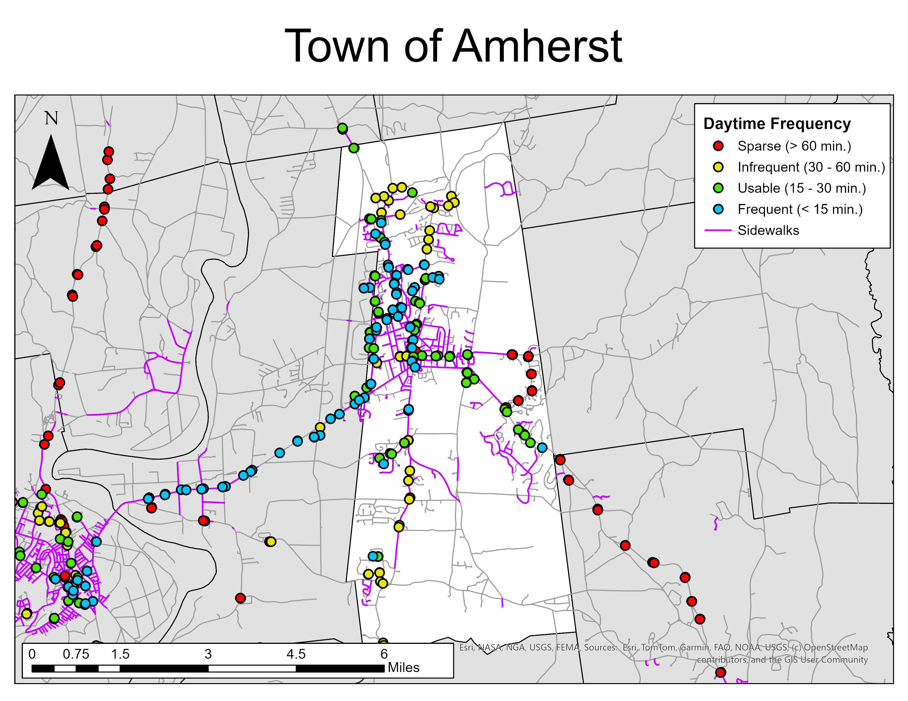

ben's portfolio
Hello, and welcome to my new online portfolio!
About
My name is Ben, and I am currently an independent researcher studying transportation, specifically public transportation, accessibility, and mobility throughout local communities. While I'm currently based in Worcester, Massachusetts, my knowledge of transit systems extends far beyond Worcester, as a rider of transit systems large and small throughout the United States. I have a formal degree in Geography & GIS, and a lot of my research focuses on the use of GIS software as a method of researching public transit.
Feel free to check out some of my major projects below!
Projects
localtransit.app
March 2026 - present
Available for viewing online at localtransit.app.
- Created a spinoff website project of my 2025 research, "Transportation Availability and Access in Western Massachusetts," focusing on interactive access and geographical scope expansion.
- Visualized dozens of transit systems across the United States and Canada by stop frequency.
- Allowed for comparisons to be made between different agencies and across transit networks.
- Displayed statistics from GTFS data, including median trip duration, distance, and speed.
Transit Challenge
November 2025 - February 2027
- Coordinating a research project with 58 participants to track personal transit ridership over one calendar year using self-recorded data, totaling over 153,000 miles of public transit ridden.
- Project goals are to learn about transit ridership patterns, network connectivity, and comparisons across agencies, modes, and points of interest (e.g. airport trips, college routes).
- Data is being collected only during calendar year 2026. Project setup, volunteer recruitment, and training was completed in December 2025, with final reports and presentations in early 2027.
- Created formulas to analyze statistics of over 23,000 trips on over 3,600 routes across all transit modes.
- Used public GTFS data to create a GIS library for an interactive map of every unique route ridden.
- Maintained an atmosphere of respect and professionalism to ensure fairness and legality on all logged trips.
Transportation Availability and Access in Western Massachusetts
August 2025 - October 2025
- Completed solo research project focusing on the reach of the public transit network in Western Massachusetts.
- Processed GTFS transit schedule data to produce data on bus frequency at the stop level.
- Created maps to visualize extent and usability of the region’s multi-modal transportation network.
- Presented research in the form of an oral presentation to the West Lakes Division of the American Association of Geographers in Milwaukee, Wisconsin.

A map of the Town of Amherst created by me and used in my presentation. Note the importance between transit frequency and safe walkability through the inclusion of sidewalks.